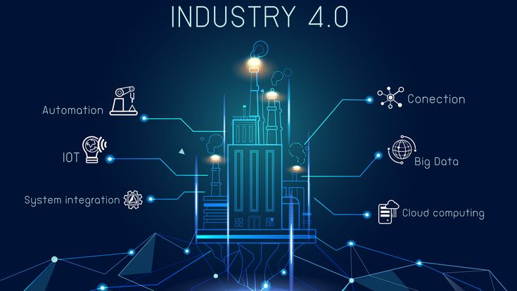

Revolusi Industri 4.0 adalah fase keempat dari perjalanan revolusi industri, yang ditandai dengan integrasi teknologi digital, fisik, dan biologis. Konsep ini pertama kali diperkenalkan oleh Klaus Schwab, pendiri World Economic Forum, pada tahun 2011 di pameran industri Hannover Messe di Jerman
Revolusi Industri 4.0, yang dikenal juga sebagai era industri yang teknologi seperti Internet of Things (IoT), kecerdasan buatan (AI), big data, robotika, dan cloud computing. Revolusi ini membawa perubahan besar dalam cara manusia bekerja, berkomunikasi, dan memproduksi barang, dengan fokus pada otomatisasi dan konektivitas.
- Internet of Things (IoT): IoT memungkinkan koneksi dan komunikasi antar perangkat yang saling terhubung melalui internet. Dengan IoT, mesin dan perangkat dapat saling berbagi data secara real-time, memungkinkan otomatisasi dan pengendalian proses secara lebih efisien.
- Robotika Canggih dan Automatisasi: Penggunaan robot yang lebih pintar dan lebih fleksibel, yang dapat bekerja di lingkungan yang lebih dinamis dan terhubung dengan sistem produksi lainnya, meningkatkan efisiensi dan produktivitas. Robotika canggih juga memungkinkan penggunaan tenaga kerja yang lebih efisien di sektor manufaktur.
- Fleksibilitas dan Skalabilitas Perusahaan dapat dengan mudah menambah atau mengurangi kapasitas penyimpanan atau daya pemrosesan sesuai kebutuhan tanpa investasi besar pada infrastruktur.